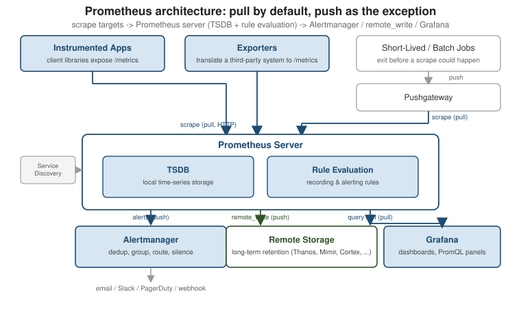

Prometheus architecture & ecosystem
|
This content was generated with the assistance of AI and should be verified against the official documentation before being relied on in production. |
Prometheus is not one process but a small ecosystem built around one central idea: the Prometheus
server periodically pulls (scrapes) metrics over HTTP from the things it monitors, stores them in
its own time-series database, evaluates rules against them, and hands the results to whoever asks — Grafana, amtool, or a raw curl against its HTTP API. This page maps every piece of that ecosystem — the server, client libraries, exporters, service discovery, the Pushgateway, Alertmanager and
remote storage — and explains why the pull model is the default and where the Pushgateway’s push
model is the deliberate exception. See
Overview — Architecture for the
canonical diagram this page expands on.

Everything on this page was checked against a small working system, the running example of this section:
a Prometheus 3.5.0 server in Docker scraping an instrumented Python service (orders-api), node_exporter
1.12.1, blackbox_exporter 0.29.1 and the Pushgateway 1.11.5. Setup is in
Getting Started; the numbers below come from that lab.
A scrape cycle, step by step
Four independent loops share one process: discovery refreshes the target list, the scrape loop pulls and stores samples, the rule loop evaluates expressions, and the query path answers HTTP requests. Nothing waits for anything else, which is why a slow dashboard query does not delay ingestion (though it can compete for CPU and memory).
The Prometheus server
The server is the hub of the whole system and, unlike most monitoring backends, it is a single self-contained binary with no required external dependencies. Internally it is built from a small number of cooperating pieces:
-
A scraper that reads the scrape configuration (targets, either static or produced by service discovery) and pulls a
/metricspage from each target on its configured interval. -
The TSDB (time-series database), an embedded, append-only, on-disk storage engine tuned for short samples with a small set of labels each, chunked into two-hour blocks and compacted in the background. It is covered in depth in Storage, Federation & Remote Write.
-
A rule evaluation engine that runs recording rules (precompute an expensive PromQL expression into a new series) and alerting rules (evaluate a PromQL expression and fire an alert when it is true) on a fixed interval, covered in Recording & Alerting Rules.
-
An HTTP API and query engine that serves PromQL queries — instant and range — to Grafana,
amtool, and the built-in expression browser, plus the/metricsendpoint the server exposes about itself.
The server reports on itself with the same /metrics mechanism, so its health is queryable like any other
target. The lab server answered:
prometheus_tsdb_head_series # 2559 series in memory
rate(prometheus_tsdb_head_samples_appended_total[1m]) # about 500 samples per second
sum(scrape_samples_scraped) # 2522 samples returned by all targets per scrape cycle
count(up) # 7 targetsThose figures agree: seven targets every five seconds returning about 2,500 samples is roughly 500 samples per
second. This is the arithmetic of capacity planning — targets times samples per target divided by the scrape
interval — discussed in
Security & Production Operations.
Two endpoints are meant for load balancers and orchestrators: /-/healthy (the process is alive) and
/-/ready (it has loaded its data and can serve queries); the lab returned Prometheus Server is Healthy.
and Prometheus Server is Ready. respectively, and /api/v1/status/buildinfo returned the version
(3.5.0, built with Go 1.24.5).
On disk, the container’s data directory right after start held only the write-ahead log and the in-memory head’s chunk files, no finished blocks yet because the first block is cut after about two hours of data:
/prometheus/data
chunks_head/ memory-mapped chunks of the most recent data
wal/ write-ahead log, replayed after a crash or restart
lock prevents two servers from sharing the directory
queries.active queries in flight, for post-mortem after a crashAll four run inside one process against one local TSDB; there is no separate ingestion tier, message queue, or external index to operate for a single-server deployment. That simplicity is also the main scaling boundary the ecosystem’s remote-storage integrations exist to work around.
The pull model, and why it is the default
Prometheus scrapes targets rather than waiting for them to send data. A target does nothing but
expose its current state at a stable HTTP path (/metrics by default); the server decides when to
collect it, from where, and what to do if the request fails.
# prometheus.yml -- minimal scrape configuration
global:
scrape_interval: 15s
scrape_configs:
- job_name: "my-service"
static_configs:
- targets: ["my-service:8080"]
# https://prometheus.io/docs/introduction/overview/#architectureThis design choice pays off in several concrete ways:
-
Up detection is automatic. A failed scrape immediately produces
up == 0for that target — there is no separate heartbeat protocol to build, and no ambiguity between "the target has nothing to report" and "the target is down." -
One place controls collection load. The server, not thousands of independently-configured agents, owns the scrape interval and timeout, so a fleet-wide change (or a temporary slowdown to protect an overloaded target) is one config edit instead of a redeploy of every instrumented process.
-
Targets stay simple. An instrumented process only has to serve a page of current values on request; it never needs to know a metrics backend’s address, retry logic, or batching strategy.
-
Ad hoc scraping needs no fleet-wide change. Because any HTTP endpoint that speaks the exposition format is scrapable, a developer can point a local Prometheus at one target — or
curlits/metricspage directly — without touching production configuration.
The trade-off is the mirror image of each of those points: the server must be able to reach every target over the network (so a target behind restrictive egress-only firewalls or a NAT it cannot be dialled into is awkward), and anything that does not live long enough to be scraped — a batch job, a cron task, a CI step — has nothing to be scraped from. That second case is exactly what the Pushgateway exists to solve, and is the one place in the ecosystem where Prometheus’s data flow is deliberately push-based.
Pull compared with push
| Aspect | Pull (Prometheus scrape) | Push (agent or client sends) |
|---|---|---|
Detecting a dead target |
Automatic: |
Silence is ambiguous; needs a separate heartbeat |
Who sets the interval |
The server, centrally |
Every sender, independently |
Network direction |
Server must reach every target |
Senders need only outbound access |
Ad hoc inspection |
|
Not possible, there is no endpoint |
Short-lived jobs |
Poor fit, they exit before a scrape |
Natural fit (via the Pushgateway) |
The lab shows the first row in action. Stopping the orders-api process for about fourteen seconds turned
up{job="orders-api"} to 0 within one scrape interval, /api/v1/targets reported the target as down
with the connection error, and the series of the service became stale at once; restarting the process was
enough to bring it back with no change on the server. A push-based system would have shown only a flat
line.
Client libraries: instrumenting a process
A client library is what turns application code into a scrape target: it maintains counters, gauges, histograms and summaries in memory and serves them, on request, as a plain-text page in the Prometheus exposition format. Official libraries exist for Go, Java/JVM, Python, Ruby, Rust and several other languages; they are the subject of Instrumenting Applications and the metric types themselves are covered in Data Model & Metric Types. A scrape of an instrumented process looks like this:
curl -s http://localhost:8080/metrics | head
# HELP http_requests_total Total HTTP requests
# TYPE http_requests_total counter
http_requests_total{method="GET",status="200"} 128301Exporters: metrics for things you cannot instrument
An exporter is a small standalone process that speaks the exposition format on behalf of a system
you cannot (or would not) add a Prometheus client library to directly — a database, a hardware
device, a hosted third-party service. It periodically queries that system through its own protocol
and re-publishes the result as a /metrics page the Prometheus server scrapes like any other target.
node_exporter (host-level CPU, memory, disk and network metrics) and the many database- and
service-specific exporters in the
exporters and integrations list are the most
common examples; running them alongside containers and Kubernetes workloads is covered in
Containers & Kubernetes Monitoring,
and exporter conventions and behavior are covered in depth in
Exporters & the Pushgateway.
Service discovery: finding what to scrape
Static target lists do not survive autoscaling, rolling deploys, or an orchestrator that reassigns IP addresses on every restart. Service discovery (SD) lets the scrape configuration instead describe where to look — a Kubernetes API server, a Consul catalog, a cloud provider’s API, DNS — and Prometheus resolves that into a current target list on its own, re-resolving periodically so scaling events are picked up without a config reload. Discovered targets carry metadata as labels (pod name, namespace, EC2 tags, and so on) that relabeling rules can then use to keep, drop, or rewrite targets before they are ever scraped. The full mechanics — SD mechanisms, the metadata each one exposes, and the relabeling pipeline — are in Service Discovery & Relabeling.
The Pushgateway: the push exception
The Pushgateway is a separate, small service that sits between short-lived jobs and the Prometheus
server. A batch job that starts, does work, and exits before any scrape interval could catch it
pushes its final metric values to the Pushgateway instead; the Pushgateway holds those values and
exposes them at its own /metrics endpoint, which the Prometheus server then scrapes normally, on
its usual pull schedule, like any other target.
echo 'batch_job_last_success_seconds 1' | curl --data-binary @- \
http://pushgateway:9091/metrics/job/nightly_backup
# https://prometheus.io/docs/instrumenting/pushing/This keeps the pull model intact end to end — the Pushgateway is a target, not an ingestion
endpoint on the server itself — while covering the one case genuine pull scraping cannot: a process
that no longer exists by the time a scrape would run. It is not a general-purpose push gateway for
long-running services, and using it that way loses the automatic up/down detection a real scrape
target gets for free, since a value pushed once keeps being served (and looking fresh) until it is
explicitly deleted. Pushgateway operation, metric grouping, and its PUT/DELETE semantics are
covered in Exporters & the Pushgateway.
Alertmanager: turning firing alerts into notifications
Alerting rules inside the Prometheus server only decide that something is wrong and produce a firing alert; the server then pushes that alert to Alertmanager, a separate process responsible for what happens next — deduplicating alerts coming from multiple Prometheus servers, grouping related ones into a single notification, routing each group to the right receiver by label, silencing known issues, and inhibiting lower-priority alerts once a related higher-priority one is already firing. Alertmanager then delivers the result over email, Slack, PagerDuty, a generic webhook, or any other configured integration. Separating this from the server means several Prometheus servers — as in a federated or sharded setup — can share one alert-routing brain instead of each needing its own notification logic. The rule side of this pipeline is in Recording & Alerting Rules; Alertmanager itself, including its routing tree and grouping configuration, is in Alertmanager.
Remote storage: beyond one server’s local TSDB
A single server’s local TSDB is deliberately not built for indefinite retention or cross-cluster
querying. The remote_write API lets a server continuously ship every scraped sample to an external,
Prometheus-API-compatible system — Thanos, Cortex, Mimir, or a cloud-hosted equivalent — for
long-term storage, global querying across many servers, and durability beyond one node’s disk. The
complementary remote_read API lets PromQL queries against the local server transparently pull in
data that only exists in that remote system. Because remote_write is a push from the server’s own
point of view, it does not contradict the pull model described above: pulling from targets and
pushing accumulated samples onward to long-term storage are two independent, orthogonal data paths.
This is covered in full in
Storage, Federation & Remote Write.
What Prometheus is not
Knowing the boundaries avoids misusing it:
-
Not a log or trace store. It stores numbers sampled over time, not events or request payloads. Use metrics to notice a problem and logs or traces to find the individual request.
-
Not for exact accounting. Scraping samples state at intervals and counters can lose increments around a crash, so billing or audit figures belong in a transactional store. Rates and percentiles are estimates.
-
Not long-term or global storage by itself. Local retention defaults to 15 days (the lab server reported
15dforstorage.tsdb.retention.time), and a single server holds a single failure domain. Long-term retention and a global view come from remote write and companions covered in Storage, Federation & Remote Write. -
Not a clustered database. High availability is two identical servers scraping the same targets, not consensus; each keeps its own copy of the data.
-
Not an event-driven or high-cardinality analytics engine. Each distinct label combination is a series that costs memory; unbounded identifiers belong in logs or a column store.
The ecosystem around it fills those gaps rather than the server growing to cover them.
How the pieces fit together
Reading the diagram above left to right: instrumented apps and exporters are scraped directly;
short-lived jobs push to the Pushgateway, which is itself then scraped — so every path into
Prometheus is still a pull from the server’s perspective. Inside the server, the TSDB stores what was
scraped and rule evaluation reacts to it. From there, firing alerts are pushed to Alertmanager for
routing and notification, samples are pushed onward via remote_write for long-term storage, and
Grafana (or any other PromQL client) pulls results back out through the HTTP query API. From here:
-
Getting Started — installing and running a first Prometheus server against the config shown above.
-
Instrumenting Applications — using the client libraries in your own code.
-
Exporters & the Pushgateway — running exporters and the Pushgateway in depth.
-
Service Discovery & Relabeling — discovering targets dynamically instead of listing them statically.
-
Alertmanager — routing, grouping and silencing alerts.
-
Storage, Federation & Remote Write —
remote_write/remote_read, federation, and long-term storage backends in depth.